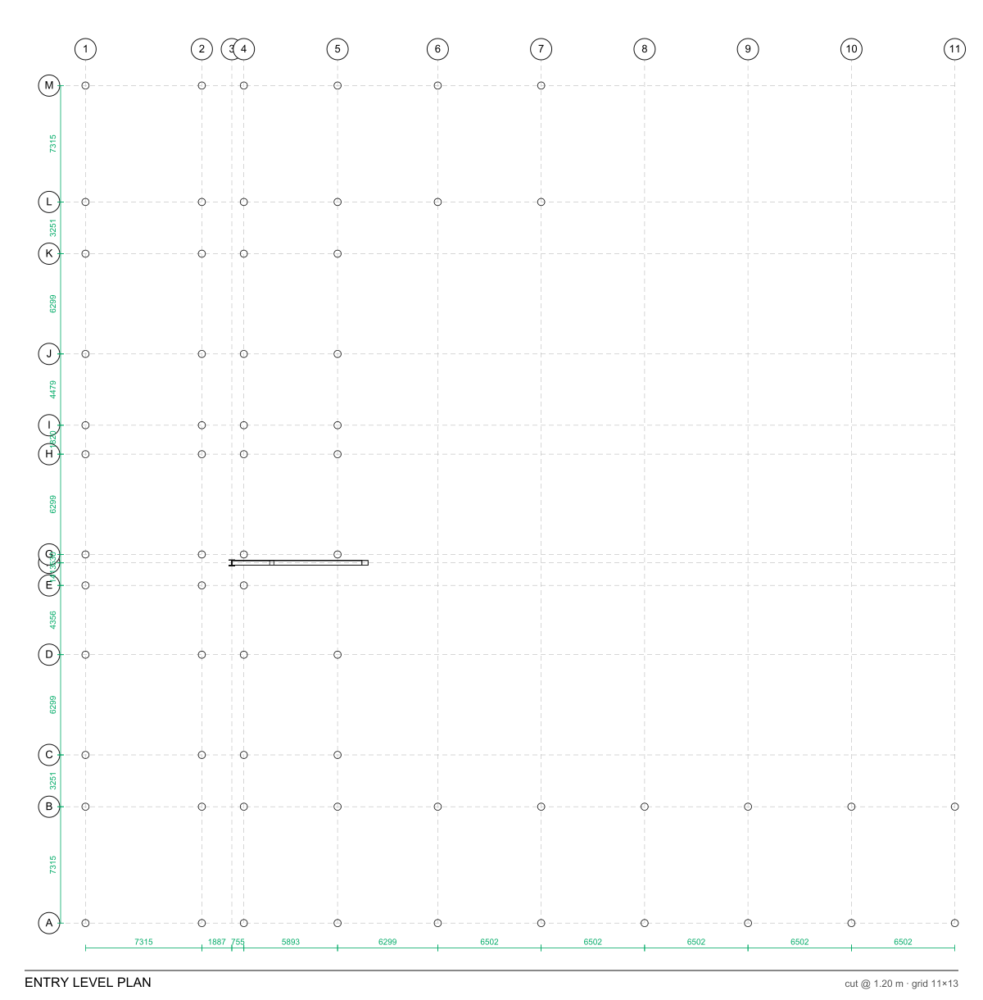

Guides & tutorials
Plain-English, step-by-step. No BIM or real-estate-finance background needed — each tutorial takes about five minutes.

Getting started — three ways to run it
🧊 Try it in your browser (nothing to install)
Open the live demo, switch to the Model workspace, and pick a sample from Open ▾. The viewer runs entirely in your browser on bundled models.
💾 Free desktop app (full platform, offline)
Download the installer for Windows, macOS, or Linux. It's the whole platform in one app — no login, no Docker. Your data stays on your machine.
🐳 Server stack (teams)
For multi-user use, run the Docker stack — see the README.
Tutorial 1 · Explore a model
Learn to move around a 3D building and read its data.
- Open the app and make sure you're in the Model workspace (top bar).
- Click Open ▾ → BasicHouse (or any sample). The building loads in the viewer.
- Orbit by dragging, pan with right-drag, zoom with the wheel. Click ⤢ Fit to recenter.
- Click any element — its properties open on the right, grouped into Attributes, Quantities (areas / volumes / lengths) and each Property Set. Filter to find a field, click a row to copy it, or Copy all; the ⧉ button copies the element's permanent IFC GUID.
- Use the left rail: the tree (spatial breakdown), layers (show/hide by type), and ⊙ Isolate / ⊞ Show all.
- Try Section (cut through the model) and Measure (distances/areas) from the toolbar.
- Need other formats? Open ▾ → Open mesh / point cloud / GIS… loads OBJ/STL/PLY/glTF meshes, PCD/XYZ/LAS/LAZ point clouds, and GIS / topography (GeoJSON site vectors, GeoTIFF DEM terrain) as georeferenced overlays. Tap 📱 Share via QR to open the project on a phone or tablet.
- Layer & coordinate models (federated coordination): each reference model has a ⛭ align panel (offset / Z-up flip / scale / move-to-point). Add discipline IFCs in the Coordination & QA panel (＋ Add discipline IFC), then 🔗 Federated clash finds cross-discipline conflicts and files them as issues on the model.
- 🏗 Raise 2D→BIM: upload a DXF floor plan and it's raised into a real IFC model — a wall per line-work segment, an IfcSpace per closed room — registered as a 2D Raise discipline model you can view and clash. Then close the loop with ▦ Scan-to-BIM deviation: upload an as-built point cloud (XYZ/CSV) and see the % within tolerance against the model surface, with mean/95th/max deviation and a deviation histogram — the as-built QA/QC check after a pour or an erection.

Tutorial ✏️ · Draft & author the model
A genuine in-browser BIM authoring tool — start from nothing, draw and edit real standards-compliant IFC across all three disciplines, and coordinate it. Not just a viewer.
- Start from scratch. Hit New model and pick Blank (levels + a ground datum) or a starter template — office bay, residential floor, or warehouse — all fully editable. It publishes a real IFC in about a second, ready to draw on. (Or open a sample / your own IFC to edit an existing model.)
- Open the Grid & Levels tool → ⊞ Load grid + levels. The grid axes (A/B/C × 1/2/3) draw with bubbles; pick the active level from the dropdown to set the work-plane. Use ✎ Manage levels to rename a level or set its elevation — edits are re-authored by storey GUID.
- Open the Draft panel — the single authoring surface. Choose a discipline tab — Architectural · Structural · MEP · Site — pick an element or family, set its named parameters, then click in the model. Points snap to grid intersections and, as you draw, SketchUp-style inference auto-snaps the cursor onto an on-axis / parallel / perpendicular line off the previous point and edge (within ~6°, no key held) so free-hand lines land clean; hold Shift for a manual ortho lock; for slabs/ceilings click the corners and double-click to close; Esc cancels. An amber proxy shows instantly, then real geometry appears as the server authors it. ➕ Add rooms / spaces grids IfcSpace rooms over each floor.
- The everyday library spans walls (including a ⟋ Slope wall top tool for parapet-slope / shed / gable walls with a rising top edge), slabs, roofs, coverings (ceilings, floor tile, wood flooring, cladding) and railings; steel W-shapes, rebar, columns, beams and footings; parametric doors/windows (real lining/frame/panel that void the host + fill the opening); and full MEP — duct/pipe/cable-tray/cable runs (with connection ports + distribution systems), electrical panels, outlets, lights, diffusers, floor drains, plumbing fixtures, fire alarms, smoke detectors and telecom outlets. In the 🔀 MEP systems tool, Connect wires two elements port-to-port and the connectivity report lists ports connected vs open and any floating (dangling) elements, isolating them in 3D.
- Fabrication tools (LOD 350-400). Flip on 🔧 Advanced fabrication tools for shop-level detailing: curtain-wall systems (a real mullion/transom grid bounding glazing panels), steel connections (base plates + anchor bolts on a column, shear tabs + bolts on a beam, each grouped into an IfcElementAssembly), rebar cages (longitudinal bars + stirrups in a concrete column), and MEP fittings (elbows / tees / transitions with the right ports, joined to a named distribution system). First-time modellers see a simple toolset; the toggle persists.
- Escape hatches for anything the recipes can't express. Two more Advanced-cluster tools cover the long tail: △ Add mesh authors an element from a raw triangle mesh (vertices + faces → IfcTriangulatedFaceSet) for geometry no parametric recipe fits; and ⚡ Run IFC code runs a small ifcopenshell snippet against the model — an AST-sandboxed authoring escape hatch that's off by default (an operator must set an environment flag to enable it, accepting the risk), with an allowlist that rejects imports, reflection and I/O before anything runs. Both go through the same versioned, undo-able, guardrailed edit path.
- Edit in place. Select an element and turn on ◈ Edit in place — a drag gizmo appears with X/Y/Z handles and a live ΔE/ΔN/ΔZ readout; drag to move it (grid-snap applies) and it re-authors on release. Or use the toolbar for typed move / rotate / copy / add door or window, plus groups & arrays and 🕐 Phasing (tag elements new / existing / demolish / temporary for renovation sequencing). Every edit rewrites the IFC by stable GUID, so every linked record (RFIs, issues, verifications) survives. Made a mistake? ↶ Undo and ↷ Redo in the Model tools rail restore prior versions of the whole model — every authoring edit is versioned, and undo stays GUID-stable so pins and issues ride along; a fresh edit clears the redo stack.
- Find and organize. The model browser (Tree) groups the model by level / discipline /
IFC class / type-family and searches across name, GUID, class, type and discipline. For
power selection, the 🔎 Query tool runs the IfcOpenShell selector language
(
IfcWall, Pset_WallCommon.FireRating=2HR·IfcElement, material=concrete) — isolate the matches in 3D or save them as a reusable selection set. Use 📶 Level of Development to tag the selection LOD 100→500 as its geometry and data mature. - Type what to build (AI command bar). The ✨ command bar atop the Author panel turns plain English into modelling — "add a 3 m wall from 0,0 to 5,0", "put a window in the selected wall", "steel column W14×30 at 6,6", "set LOD 350 on the selection". It maps the instruction to a validated plan shown for confirmation — nothing writes until you click Apply. A deterministic keyword baseline works with zero setup; with an API key set, Claude plans multi-step ("a 5×4 m room at 0,0" → four walls, one-click Apply all). It never invents GUIDs, and every step re-runs the same guardrail that rejects broken IFC (zero-length walls, bad coordinates/dimensions) before it touches the model.
- Select any element to open its docked 📋 Properties panel (Type/Instance header), then expand ✎ Edit / Classify to set a typed Pset property (string / number / boolean) or attach a classification reference — Uniclass 2015, OmniClass, Uniformat II or MasterFormat. It writes back into the IFC as a standard IfcClassificationReference, carrying into takeoff, cost and asset systems.
- Coordinate: open 💥 Clash & coordination to run a federated or single-model clash, review the hits, and promote them to BCF issues — all on the model you just authored.
Tutorial 📐 · Generate the construction-document set
Turn the model you authored into an issuable permit set — drawings, schedules, sheets and the spec book — straight from the geometry, offline, GUID-stable. Everything derives from the authored extruded profiles, so it stays true to the model.
- In Grid & Levels, pick the active level and open 🖨 Generate plan (SVG). You get a scaled plan of that level — walls/columns/slabs/rooms as class-styled poché, with overall dimensions and numbered keynote bubbles + a legend (the keynotes come from the spec codes the detail engine attaches — see below). Any element carrying an attached detail also gets an NCS-style detail callout (a divided circle with a leader) plus a keyed DETAILS legend, distinct from the keynote bubbles — so attach a detail in 🏷 Detailing, regenerate, and the referencing callout appears and flows through to the issued sheet.
- Open 📐 Sections & elevations for true linework: cut sections (X-X / Y-Y, auto-centred through the building) and projected elevations (N/S/E/W). Each view has a ⤓ DXF button so the linework opens in any CAD tool (a dependency-free R12 writer).
- Open 📋 Schedules for computed door / window / room schedules — marks, widths/heights, types, levels and areas pulled directly from the elements. They lay out as tables you can issue.
- Compose an issuable sheet: 📄 Issue sheet (A-101) places the plan in a scaled viewport on an ARCH-D (36×24″) border with a titleblock (project, sheet title/number, scale, north arrow). Then ⤓ Sheet PDF and ⤓ Schedules sheet (PDF) render submittable PDFs — a permit set you can hand to the AHJ, produced in the browser with no desktop CAD tool.
- Attach detail intelligence with 🏷 Detailing (on a selected element): classification codes (UniFormat / MasterFormat / OmniClass / Uniclass) and detail drawings + installation instructions, IFC-natively. Or run ✨ Auto-detail (rules) — a rule library that, e.g., gives a window in an exterior wall its IBC / ASTM / AAMA flashing detail + spec/keynote codes automatically, and validates the same rules as author-time QA (which elements are missing a required keynote).
- Write the spec book: 📖 Project manual groups the model's elements by their MasterFormat work-result classification into CSI divisions → sections, each framed 3-part (Part 1 General · Part 2 Products · Part 3 Execution) — a starting outline the spec writer finishes. Download it as a text outline.
Tutorial 🏛 · Check code & permit-readiness
Pre-check the model against the building code the way a plan reviewer would — occupancy, egress and a permit-readiness checklist, every result citing the section. A design-stage assist, not a certified review: always verify with the Authority Having Jurisdiction (AHJ).
- Open 🏛 Code analysis (QA rail) for the G-series code summary a permit set carries: occupancy classification (inferred from the space mix or set explicitly), construction type, gross area + story count, the computed occupant load + egress, and the governing sections for allowable area/height and element fire ratings.
- Set the Jurisdiction (US state) field and it resolves the adopted IBC edition and names it throughout — the badge reads "IBC 2021", citations become "IBC 2021 Table 506.2 …". The edition also drives the actual computation: occupant-load factors are edition-scoped, so a jurisdiction on an older cycle (e.g. Business areas at 100 gross ft²/occ in IBC 2012/2015 vs 150 in 2018+) computes a higher occupant load and required egress width than the current baseline. (The seed is a dated starting point; adoptions change by cycle and local amendment — confirm the edition in force with the AHJ.)
- Run 🏛 Occupancy & egress (IBC pre-check) for per-space occupant load (IBC 1004.5), required vs provided egress-door width, a 32-in min-door check and a two-exits-when-load>49 flag.
- Open ✅ Approvability pre-flight — a plan-reviewer readiness checklist that runs five cited checks (egress capacity, egress door clear width ≥32 in, two exits where the load demands them, occupancy classification on spaces, and fire-rated assemblies substantiated by a UL/GA number or an attached detail), returns pass/fail/na per check plus a readiness score, and isolates any flagged elements in 3D. It's the same signal that feeds the Model Health scorecard.
- Before you issue the set, run 🚫 Decision-readiness (RFI-prevention) — the proactive inverse of the RFI. Every RFI is a decision made without the information needed, so this surfaces the information gaps a builder would otherwise have to ask about: failed code checks, elements missing a required detail or keynote, model-data gaps (orphaned / unenclosed / unnamed / duplicate) and open clashes — all composed into one ranked resolve-before-issue list, each gap with a category, severity and a concrete fix, isolating the flagged elements in 3D. A pre-check assist, not a promise of zero RFIs.
Tutorial 2 · Generate a building from zoning ⭐
The headline feature: turn a lot + zoning rules into a real building and a first-cut deal.
- Go to the Finance workspace → Proforma tab.
- Find the 🏗️ Generate from zoning panel. Enter your lot (width × depth or area), FAR, setbacks, and a height limit.
- Tick the options you want: structural frame, unit layout (apartments on a corridor), facade envelope, service core.
- Click Estimate yield to preview the program (floors, units, GSF) and a starter proforma — instantly, without saving anything.
- Happy with it? Click Generate IFC model + apply. It builds a real IFC building, publishes it to the viewer, and loads the numbers into the live proforma.
- Switch to the Model workspace to see your generated building. Open Test Fit (back in Finance) to compare unit-mix schemes or ⚡ Optimize for the highest-yield layout.


Tutorial 3 · Underwrite a deal
Build the cost budget, balance the capital, and produce an investor package.
- In Finance, open the cost budget panel. Add line items by category — acquisition, hard (construction), soft (design/fees) — as $/unit × quantity, with a contingency %.
- Click Apply to proforma — the budget rolls into the deal's cost tree.
- Open Sources & Uses to see the capital plan (debt sized to your LTC/LTV/DSCR, plus equity).
- Tune the drivers (rent, exit cap, hold). Watch the returns bar — IRR, equity multiple, yield-on-cost — update live. Guardrail badges flag anything outside market ranges.
- Open the Statements tab for full financial statements off the live deal: a stabilized income statement (rent → NOI → depreciation → net income), a balance sheet that balances every year, a cash-flow statement, the tax at sale (depreciation recapture + capital gains → an after-tax IRR), and the budget as a two-sided Uses ∣ Sources view.
- Click 📄 Investment memo or 📊 Pitch deck to generate a polished PDF from the live numbers.
- Once the job is live, track the capital: the developer dashboard reconciles the GC's GMP to your underwritten hard cost (one click to sync), models construction-loan draws (equity-first, with interest accrual), and exports a lender draw-request PDF. The portfolio view rolls returns up across every deal.
Tutorial 4 · Run a project (GC portal)
Manage construction — works even with no model loaded.
- Click ＋ New in the top bar to create a project (no IFC needed).
- Go to the Construction workspace. You'll see the dashboard and a catalog of modules (RFIs, submittals, change orders, daily reports, inspections, safety…).
- Open RFIs → ＋ New, fill in the subject and question, and save. Use the workflow buttons (submit → respond) to move it along.
- Contracts & change orders: open a Prime Contract, Subcontract, or Change Order record → Generate the document (AIA-style PDF), Compose Exhibit A (scope from the clause library), View & markup to redline, and Sign (per-party typed signatures) — then approve via the workflow. Change orders show the original → revised contract sum.
- Explore Board (kanban), filters, and the Related panel on a record (it links RFIs → change events → CORs automatically).
- Use Schedule for CPM/critical path, the takt chart, and the ⏱ 4D sequence slider to scrub the build in the viewer. ⏩ Accelerate (advisory) reads the critical path and suggests where to crash or fast-track work (advisory only — it never rewrites your schedule).
- Plan the near term on the Pull-planning board (Last Planner): trades post sticky-note tasks by week and mark them ready, and the analytics view tracks PPC, Tasks-Made-Ready %, perfect-handoff % and a variance-reason Pareto. The board is live-collaborative — it refreshes as others edit, shows who's on which note, and warns you if someone changed a card you're editing.
- Permitting → 🏛 Import from city open data: pick a city (NYC · SF · Chicago · LA · Austin, more easily added), search by address or near the site, and import issued/filed permits straight into your permit log — owner, architect, GC, units, valuation and status come along, deduped on re-import.
- Pull a report: the Report Center renders an executive summary, cost, EVM, change-order, RFI, contracts and a risk digest — each as a PDF and an Excel workbook.
- Track health with the analytics dashboards (each a live tool and a PDF/Excel report): a quality dashboard (inspection pass-rate, NCR disposition→close loop, deficiency ball-in-court), RFI and submittal registers (ball-in-court / overdue / turnaround), a T&M rollup tied to change events, a field-log rollup (manpower / weather lost-days), an OSHA safety dashboard (TRIR / DART), and a closeout dashboard (punchlist, commissioning, warranties) — all stitched into an executive project-health rollup.
- Specifications → submittals: keep your project manual in the Specification register (Preconstruction), then run § Spec submittal log to derive the required submittals per CSI section — typed (shop drawing, product data, sample…) — and see which are missing against what you've logged, with a coverage %. ✨ Extract submittals from a spec turns pasted spec text into a typed submittal list (AI when an API key is set, a built-in parser otherwise) and, one click, logs them and builds the register straight from the spec book.
- Open Schedule → Budget for the project GMP: it assembles automatically from your cost codes, committed subcontracts (buyout) and GC/GR staffing, plus overhead / fee / contingency. Each line carries budget → committed → actual → forecast (EAC) and the variance, and reconciles to the prime contract. A cash-flow S-curve spreads it across the schedule.
- Estimate the labour: 💰 Labour estimate turns the model's quantities into man-hours using a man-hours-per-unit rate library (earthworks / concrete / masonry / steel / MEP / finishes) with typical crew sizes and condition loading factors (highrise / remote / summer / congested / night-shift). It reads a rough takeoff straight off the model (walls → masonry face area, slabs/columns → concrete volume) and reports man-hours → crew-days → labour cost → duration per activity. The rates are editable benchmarks; it's labour only (add materials/equipment/overhead for a full cost).
- See cost on the model (5D): click any element for its 5D readout (cost code, budget, progress), or open the cost / progress heatmap to color the whole model by spend or % complete.
- Bill the owner: generate the pay application (G702/G703) PDF from the Schedule of Values — it draws straight from the budget lines, with retainage and stored-materials handled.
- Watch the Deadlines widget on the portal home — a cross-module feed of what's overdue or due this week across RFIs, submittals, change orders, inspections and more.
- Ask the "Ask AI" box plain-English questions like "what's overdue?" or "are we over budget?"

Tutorial 👷 · Load resources on the schedule
Cost-load the schedule with crews, equipment and material — get the manpower histogram, a cost S-curve, and a leveling advisory. Needs schedule activities with dates.
- Create Resource assignments (Resources section): give each a name and type (Labor / Equipment / Material), a units/period and rate, and link it to a schedule activity and a cost code. The cost auto-rolls up onto the cost code.
- Open 👷 Resource loading in the construction workspace. The histogram shows concurrent units per trade per week; the cost S-curve shows cumulative spend; the KPIs show peak units, total cost and over-allocated weeks.
- Set an availability cap (units/week). Weeks above it are flagged as over-allocated, and the leveling advisory lists work that has CPM float and can be smoothed (shifted within its float) to shave the peak — while critical-path work is locked. Export it all to a PDF report.
Tutorial 📊 · Track cost + schedule performance (Earned Value)
One ANSI/EIA-748 metric set — is the job over budget, behind schedule, and where will it land? Needs schedule activities with a budget + % complete and direct costs by cost code.
- In the construction workspace, open 📊 Earned Value. The dashboard shows CPI (cost), SPI ($-schedule) and SPI(t) (time-schedule) with health bands, plus BAC / EV / AC.
- Read the CPI–SPI quadrant: the project (and every control account) is plotted on the cost × schedule plane, split at 1.0 — upper-right is under budget and ahead; lower-left is trouble.
- The S-curve plots planned value against earned + actual to the data date; the forecast card shows the EAC family (BAC/CPI, remaining-at-plan, cost+schedule-drag), ETC, VAC and TCPI, with a stage-adaptive recommendation.
- Give each activity an EV method (percent · 0/100 · 50/50 · units-complete · milestone · LOE) so credit follows the rule you use in the field, not just a flat %.
- If the model is field-verified, Model-based EV earns value off physically-installed elements and flags a front-loaded SOV when reported progress outruns what's actually built.
- Click 📸 Capture snapshot each reporting period to build a CPI/SPI performance trend — a falling line means efficiency is slipping. Export the whole thing to a signed PDF report.
Tutorial 📄 · Read the WIP schedule (billing vs earned)
The defining construction-accounting report — is a job over- or under-billed, and where's the cash? The accounting twin to earned value. Needs a prime contract, budgets + SOV, direct costs and owner invoices.
- Open 📄 WIP Schedule in the construction workspace. % complete is cost-to-cost (cost-to-date ÷ total estimated cost); earned revenue = % complete × contract value.
- Compare earned to billed. If you've billed more than you've earned you're over-billed — a contract liability (you've borrowed against future work). If you've earned more than billed you're under-billed — a contract asset that ties up cash, and the #1 killer of otherwise-profitable contractors. The panel colours and explains which you are.
- The table shows the full position — contract, estimated cost, cost-to-complete, earned, billed, retainage held, gross profit and backlog. The portfolio WIP lists every job worst-cash-position first, and it all exports to a signed PDF.
- Model cross-check. When the project has a model with field-verified install status, the panel also shows physical % complete — installed elements ÷ total, keyed by IFC GlobalId — next to the cost-to-cost figure, with a divergence flag. Cost running well ahead of physical progress is the classic front-loaded-billing / cost-overrun signal; physical ahead of cost can mean you're under-billing the work in place. It ties revenue recognition to what's actually built, not just what's been spent.
- Hand it to accounting. In 📒 General Ledger, the balanced double-entry journal and trial balance export as GL CSV or QuickBooks IIF. For a clean month-end, use a journal export batch: Freeze current books into a batch (draft) → submit → approve → export, so the accountant imports exactly the figures that were reviewed and signed off.
Tutorial 🔗 · Trace cost to the model (by GlobalId)
A cost-code ledger tells you what a division cost. This tells you what a specific column cost — because every cost record can be tagged with the IFC elements it pays for, by GlobalId. That's the model → resource → cost → GL link a cost-code-only system can't make.
- When you create a budget, commitment, direct cost or sub-invoice, tag it with the IFC elements it pays for (their GlobalIds — e.g. the columns a steel-erection cost covers).
- Open 🔗 Cost Traceability in the construction workspace. Coverage is the share of job cost tied to real model elements — overall and per cost code. Low coverage flags cost that isn't defensible against the model yet.
- Paste a GlobalId into “What did this element cost?” to see every cost line referencing that element, totalled and broken out by kind (budget / commitment / direct cost / sub-invoice).
Tutorial 5 · Hand it over (turnover + LOD-500)
Close the project out, verify the as-built, and produce the handover package.
- Work the Punchlist: open an item, mark it ready, attach a photo, then verify (verification requires the photo — an evidence gate).
- Verify the as-built (LOD 500). Open ✅ As-built verify (LOD 500), select what's been confirmed in the field, and stamp it field-verified — recording the method (field-measure / laser-scan / total-station / photo / submittal / inspection) and who/when. The tool tracks readiness (the share of elements verified) climbing as you go. Record field-measured dimensions too — the tool stamps the measured value against the design value and computes the variance and whether it's within tolerance, so the summary shows how many elements carry a verified dimension and how many are out of tolerance. Then stamp manufacturer / serial data (manufacturer, model, production year, serial number, barcode) — the exact fields that round-trip to COBie and asset/CMMS systems for O&M.
- Record commissioning, as-builts, warranties, and the completion certificate.
- Check the Model Health scorecard — one number across five lenses (integrity, ISO-19650 information, clash coordination, verified-as-built, and code & permit-readiness) — so you can see the model is turnover-ready before you sign off.
- Export COBie (the standard facilities-handover spreadsheet), the QTO, and a one-click turnover package (as-built IFC + COBie + closeout docs).
Tutorial 6 · List & value it
Take the finished (or off-plan) building to market and put a defensible value on it.
- In Finance, open the Listing panel and click Auto-fill from model + proforma. It pulls the address, areas, unit mix, amenities and price straight from the IFC model and the deal — no retyping.
- Generate the marketing fact sheet PDF (a BIM-native Listing Fact Sheet), then Share to get a signed public link + QR code — read-only, so you can market a building off-plan before it's built.
- Open the Valuation tab to appraise it three ways — cost, income, and sales-comparison cards — then set the reconciliation weights to blend them into a final value. Import comparables (paste CSV or upload — RESO field names work too) to feed the sales approach, and download the Valuation report (PDF or Excel).
- Once you own and operate it, the Operations tab is a live rent roll (occupancy, WALT, in-place income) plus lease management — renewal/expiration pipeline, rent-escalation schedule and CAM/expense-recovery reconciliation. The Investors tab holds the cap table, runs capital calls / distributions and an equity-waterfall distribution scenario (pref → return of capital → promote, allocated per investor), and mints a signed, no-login link to each investor's statement.
Tutorial 7 · Operate it (facilities, energy & ESG)
After turnover, ~80% of a building's lifetime cost is operations. The same project — and the same model — keeps running it.
- Before you even buy: the developer workspace's 📜 Diligence & Entitlements panel tracks the study checklist (title/ALTA, Phase I ESA, geotech, utilities, traffic…) and the entitlement pipeline (rezoning → hearing → approved, with approval expirations), rolled into one go / no-go banner before you release contingencies.
- In the Construction workspace's 🔧 Operations panel, set up PM Schedules for the big equipment (frequency in days) and click Generate PM work orders — due schedules become preventive work orders before things break. The KPI cards show PM compliance %, MTTR and the overdue backlog, so you can see whether the building is run proactively or reactively.
- Log utility bills as Meter Readings (or import a CSV). The ⚡ Energy panel converts everything to site kBtu and normalizes it to EUI (kBtu/sf/yr) — the standard benchmarking number — with a monthly trend and cost by utility. Fully offline; no account needed.
- The 🏥 Facility Condition panel scores building health: assess each element (UNIFORMAT II) with a condition rating and repair cost, and it computes the Facility Condition Index — FCI = (deferred maintenance + capital renewal) ÷ replacement value — with the band (Good <5% · Fair · Poor · Critical), a by-system breakdown, and a portfolio view that ranks buildings worst-first so capital goes where the backlog is largest. Deficiency costs feed the reserve study automatically.
- In Finance ▸ Asset Mgmt, give your Asset Register items an expected life and replacement cost, then run the reserve study: it projects every replacement over 25 years, flags the first underfunded year, and solves the flat annual contribution that keeps the fund solvent. The CAM reconciliation below it trues up each tenant's share of operating expenses (variable-only gross-up) and prints per-tenant statements.
- The 🌊 Resilience panel sizes the building against water: a flood check computes the ASCE 24 design flood elevation (base flood + freeboard by risk category) and flags below-DFE MEP, and a stormwater check runs the Rational Method (Q = CiA) on your drainage areas to size detention. Physical climate risk from here also rolls into the ESG scorecard, and the schedule can be weather-sequenced so rain-sensitive work is planned around the season.
- The 🌱 ESG & POE panel is the sustainability scorecard — EUI, greenhouse-gas Scope 1/2 from your own meters, water, certification points — plus post-occupancy evaluations that compare the design EUI against what the meters actually say. Export the ESG summary from the Report Center.
Tutorial 8 · Standards, design & engineering depth
The authoring / design / engineering / interop upgrades — every one produces a report in the Report Center (PDF + Excel) and, where it's a register, gets a CRUD form.
- BIM Execution Plan — keep your information requirements (EIR / BEP / AIR), CDE containers and drawing sets, then open Report Center → BIM Execution Plan. It assembles a full ISO 19650 BEP: a roles-&-responsibilities matrix (one authoring lead per discipline), Level-of-Information- Need targets by stage (LOD 200→500), the delivery schedule, naming standards, the CDE workflow and QA — from the registers you already keep, no re-entry.
- LOD & naming — set target LOD in the LOD Targets register; the LOD Matrix &
Coverage report infers each element's achieved LOD from its data completeness. The Naming
Convention Compliance report audits your files (
Type_Discipline_Description_Revision_Date) and drawing sheet numbers (NCSA-101) and lists what's off-standard. - Design options — add schemes to the Design Options register (area, cost, EUI, IRR); the Design Options Comparison report ranks them apples-to-apples, names the best per metric, and shows the deltas vs the one you mark selected. Standardize with the Design Standards register (approved / prohibited materials) — the model is audited against it.
- Engineering — the MEP Equipment Schedule report gives first-pass duct/pipe sizing, cooling tonnage and hanger spacing, plus MEP element counts read off the model. Put a crew size on schedule activities and the Resource-Loaded Schedule report draws the manpower histogram + man-week S-curve and flags over-allocation.
- Analyze & export — Model query groups elements by discipline / class / storey and counts them or sums a quantity; export the element table as CSV or JSON-LD. The Envelope Code Compliance report checks wall / roof / window assemblies against IECC 2021 climate-zone minimums.
- Field — log installed quantity + crew hours in the Productivity Log; the Field Labor Productivity report shows units-per-man-hour by trade. A computer-vision progress bridge is available as an opt-in, feature-flagged integration (it invents nothing when off).
Tutorial 🛰️ · Coordinate, lay out & walk the as-built
The 2026 field workflows — clash-to-issue coordination, model-driven setout, a preliminary load check, deeper model hygiene, the Construction Execution Plan, and a photoreal reality overlay. Everything is anchored to the IFC GlobalId, so it round-trips.
- Coordinate clashes (not just detect them) — publish your discipline models, then in the viewer choose 🔗 Coordinate clashes (grouped issues). Raw clashes are grouped by element (one busy beam that hits ten ducts becomes one issue, not ten), scored by discipline pair + overlap volume, and written as coordination issues in the BCF model. Re-run after a model update and it reconciles automatically — new, still-active, resolved, and reappeared clashes are tracked by a stable hash. The KPI view shows the grouping reduction and the open/resolved split.
- Lay it out in the field — pick 📍 Field layout (points CSV / DXF) to turn column /
footing / opening / wall placements and grid intersections into numbered setout points in
real-world Easting/Northing/Elevation (the survey
IfcMapConversionis applied). Export PENZD / PNEZD CSV for a total station or layout robot, or a layered DXF for a floor printer. Each point carries its element GlobalId, so an as-installed survey can be checked back against design by point number — out-of-tolerance points are flagged and anchored to the element. - Sanity-check the gravity loads — 🏛 Load takedown (preliminary) runs an ASCE 7-22 tributary-area take-down: slab self-weight + superimposed dead + occupancy live (with the §4.7 live- load reduction), accumulated storey-by-storey down to the footing, with the governing LRFD/ASD combination. It reads storey + column counts off the model. Preliminary only — no lateral, and not a substitute for a licensed structural engineer (the caveat ships with the result).
- Catch modelling mistakes — Model QA now adds a wrong-storey check on top of duplicate GUIDs, overlapping duplicates, orphaned elements, unenclosed spaces and blank names: an element assigned to Level 1 but physically sitting at Level 2's elevation is flagged, GlobalId-anchored.
- Produce the Construction Execution Plan — open Report Center → Construction Execution Plan (CEP). It assembles a ten-section CEP — organization & authorities, scope by bid package, master schedule & milestones, procurement & subs, cost & change control, safety, quality, submittal/RFI procedures, permits, and closeout — from the modules you already keep. It's the GC counterpart to the BIM Execution Plan; export PDF or Excel.
- Walk the as-built reality — capture the site with a phone/drone (any Gaussian-splat pipeline,
e.g. Nerfstudio) and open the
.splat/.ksplatvia Open mesh / point cloud / GIS / reality capture…. The photoreal splat loads as a view-only overlay beside the BIM model, co-registered with the IFC and your point clouds, so the field team can walk the real condition against the design. It streams from your file — nothing leaves the browser.
Tutorial 🧬 · openBIM data tools (Wave 9)
Six data-layer tools that make the model coordinated, checkable, and searchable — all in the Model workspace's Tools rail (Coordination & QA, plus Grid & Levels).
- 🔧 Normalize properties — the transform step between IDS validation and COBie/export.
Federated models name the same thing differently (
Fire_RatingvsFireRating); this detects every pset/property in the model, lets you build remap rules (source Pset.Prop → target, with type coercion + move/copy), previews the match counts, then rewrites the IFC by GUID so pins/RFIs survive. Turns messy inputs into standards-clean data. - 🏛 Occupancy & egress (IBC pre-check) — computes the occupant load per space (IBC 1004.5 area factors by occupancy) and building total, the required egress width (load × 0.15 in) vs the provided egress-door width, plus a 32-in min-door check and a two-exits-when-load>49 flag — all with cited IBC sections. A design-stage pre-check / assist, not a certified review or a substitute for the AHJ.
- 🧬 Property layers (IFC5 overlays) — IFC5-style non-destructive composition: stack named override layers (base → discipline → coordination), each carrying property overrides from the selected element. The strongest enabled layer wins, disagreements surface as conflicts (with provenance + both values — the data-world twin of clash detection), and Bake flattens the result into a GUID-stable IFC version. Nothing touches the model until you bake.
- 🕸 Related elements (model graph) — answers relational questions the property index can't, straight from the IFC's own relationships: select an element and see its multi-hop neighbourhood (its level, the openings in it, the space it bounds, everything on the same storey), every hop cited by relationship. Click any related element to select it in 3D.
- 🪑 Furnish spaces (Grid & Levels) — generative fit-out: grids real IfcFurnishingElement (desk / table / bed / sofa templates) into every room's footprint with aisle clearances, contained in the right storey — so the furniture flows into QTO / BOM / COBie.
- 🏗 Site logistics (4D timeline) — place temporary construction resources (crane with a reach ring, hoist, laydown, gate, fence, haul route) in project coordinates with a schedule window. They render as 3D glyphs and time-phase by date: pick a date and only what's active then is shown — a constructability + site-safety rehearsal on the model. The broader 🏗 Site content library extends this to logistics, furniture and landscaping (tower/mobile cranes, hoists, fencing, sanitary units, site offices, laydown, gates, dumpsters; desks/chairs/tables/beds; trees, shrubs, planters, bollards) — each placed at an [E,N] point and auto-classified into the correct IFC class + project phase (logistics land as temporary, so they ride the 4D slider) + Uniclass/OmniClass code, from a supplied mesh or a category-sized placeholder box.
Glossary — plain English
| IFC | The open file format for building models. The platform's "source of truth" — every record points at an element's permanent IFC ID. |
| BIM | Building Information Modeling — a 3D model that also carries data (materials, costs, properties), not just shapes. |
| FAR | Floor Area Ratio — how much building floor area zoning allows per unit of land. FAR 3 on a 10,000 sf lot ≈ 30,000 sf of building. |
| Setback | How far a building must sit back from the property lines. |
| Massing | The basic size/shape of a building before detailed design — what "generate from zoning" produces. |
| Proforma | The financial model of a development — costs in, rent/sale out, returns calculated. |
| Hard / soft costs | Hard = physical construction. Soft = design, fees, permits, financing. Roughly 70–80% / 20–30%. |
| Sources & Uses | Where the money comes from (debt + equity) vs where it goes (land + construction + soft costs). |
| NOI | Net Operating Income — rent minus operating expenses. The basis for value. |
| Cap rate | NOI ÷ value. Lower cap = higher value. Used to estimate sale price at exit. |
| IRR / Equity multiple | IRR = annualized return %. EM = total cash back ÷ cash in (e.g. 1.9×). |
| Yield on cost | Stabilized NOI ÷ total project cost — the developer's "did this pencil?" number. |
| RFI | Request for Information — a formal question to the design team during construction. |
| Pay app (G702/G703) | The standard monthly billing forms a contractor submits for payment. |
| GMP | Guaranteed Maximum Price — the capped contract sum: cost of the work + the GC's fee. The platform builds it up from cost codes, buyout and staffing, plus markups. |
| Cost code / SOV | Cost code = a budget bucket (often by CSI division). Schedule of Values = the billing breakdown the pay app draws from — here it's seeded straight from the budget. |
| Buyout | Awarding subcontracts against the budget. The difference between the budget and what you actually commit is buyout savings (or overrun). |
| EAC / forecast | Estimate At Completion — what a line will ultimately cost given progress and committed amounts. Drives the over/under variance. |
| 5D | The 3D model + time (4D) + cost. Click an element to see its cost, or color the model by spend or % complete. |
| Loan draw | A scheduled withdrawal from the construction loan to pay for work in place — modeled equity-first, with interest accruing on the balance. |
| Takt / Line of Balance | Scheduling where each trade moves floor-to-floor at a steady pace — the "assembly line" approach. |
| 4D | The 3D model + time — scrub a slider to see what's built on any day. |
| COBie | The standard spreadsheet handed to the building's operator at turnover (assets, warranties, manuals). |
| Clash / IDS | Clash = two elements overlapping. IDS = a checklist your model must satisfy (data quality). |
| Appraisal | A defensible estimate of a property's value — here done three ways (cost, income, sales-comparison) and reconciled into a final number. |
| RESO | Real Estate Standards Organization — the common data dictionary MLS systems use, so a listing's fields export cleanly for an MLS push. |
| Listing / days-on-market | The marketing record for a property offered for sale. Days-on-market = how long it's been listed. |
| Phase I ESA | Environmental Site Assessment — the standard pre-purchase environmental study (records + site walk); "no RECs" means no recognized contamination concerns. |
| Entitlements | The public approvals a project needs before building — rezoning, site plan, variances. Often the longest, riskiest stretch of a development. |
| CMMS / PM | Computerized Maintenance Management System. PM = preventive maintenance — scheduled work orders generated before equipment fails. |
| MTTR | Mean Time To Repair — average days from a corrective work order being raised to completed. Lower is better. |
| EUI | Energy Use Intensity — a building's annual energy per square foot (kBtu/sf/yr). The standard number for comparing building energy performance. |
| Reserve study | A long-range plan proving the reserve fund can pay for roofs, chillers and elevators when they wear out — replacement schedule + funding adequacy. |
| CAM / gross-up | Common Area Maintenance — operating expenses tenants reimburse. Gross-up adjusts occupancy-variable expenses to a stated occupancy so a half-empty year doesn't distort shares. |
| Scope 1 / Scope 2 | Greenhouse-gas accounting: Scope 1 = fuel burned on site (gas boilers), Scope 2 = purchased energy (grid electricity, district steam). |
| POE | Post-Occupancy Evaluation — the structured "did the building work as designed?" study, from a light survey to a forensic instrumented one. |
| Comp (sales comparable) | A recently sold, similar property used to estimate value by comparison in the sales-comparison approach. |
FAQ
Do I need Revit or any paid software?
No. The platform is open and IFC-native. You can bring Revit models in three ways:
(1) the free Massing for Revit pyRevit add-in — one click Massing ▸ Publish to Massing
(uses the API, so it needs a Commercial licence); (2) Revit's built-in File ▸ Export ▸ IFC then
Open IFC… (free on any plan); or (3) the paid Autodesk bridge to drop a raw .rvt
directly. IFC and Fragments load free and offline.
Can I actually author a model, not just view one?
Yes — that's the point. Start from a blank IFC (or a template) and draw/edit real IFC across architecture, structure and MEP by GUID-stable server-side recipe, with drag-to-move edit-in-place, full model undo/redo, SketchUp-style drawing inference, a family/type system, LOD dialing, fabrication-grade detailing (down to sloped-top walls, raw meshes and a sandboxed code escape hatch), and an AI command bar. Guardrails reject broken IFC before it writes. See the Draft & author tutorial.
Can it produce drawings / a permit set?
Yes. Generate plans, sections, elevations and door/window/room schedules straight from the model, lay them on issuable ARCH-D sheets with titleblocks, and export to PDF and DXF — plus a 3-part MasterFormat project manual (spec book). See Construction documents. It's a pre-check/authoring aid; a stamped permit set is still finished and sealed by the responsible professional.
Does it check building code?
It pre-checks. You get a G-series IBC code-analysis summary, an occupancy-load + egress check, jurisdiction-adopted code editions in the citations, and an approvability (permit-readiness) pre-flight — every result citing the section. It's a design-stage assist, not a certified review: always verify with the AHJ. See Code & permit-readiness.
Is my data private?
On the desktop app, everything stays on your machine. The server stack is self-hosted — you run it.
Can I use just one part — say, only the proforma or only the GC portal?
Yes. Create a blank project (＋ New) and use the Finance or Construction workspace on its own — no model required.
Can a team work on the same project?
Yes (on the connected/server stack). Invite members and give each a capability role (viewer → admin) and a party role (GC, Owner, Owner's Rep, Consultant, Subcontractor). The party role tailors their view and controls who can advance a workflow; the capability role gates what they can edit.
What does it cost?
The single-project desktop app is free with no per-seat license. A paid connected/cloud tier is planned.
Can I list or appraise the building?
Yes. The Finance workspace auto-fills a RESO-aligned Listing from the model + proforma, generates a marketing fact sheet PDF and a signed public link/QR (even off-plan), and the Valuation tab appraises the building three ways (cost, income, sales-comparison) into a reconciled final value with a downloadable report.
How do I get help?
Re-open the in-app tour with the ? button, or file an issue on GitHub.